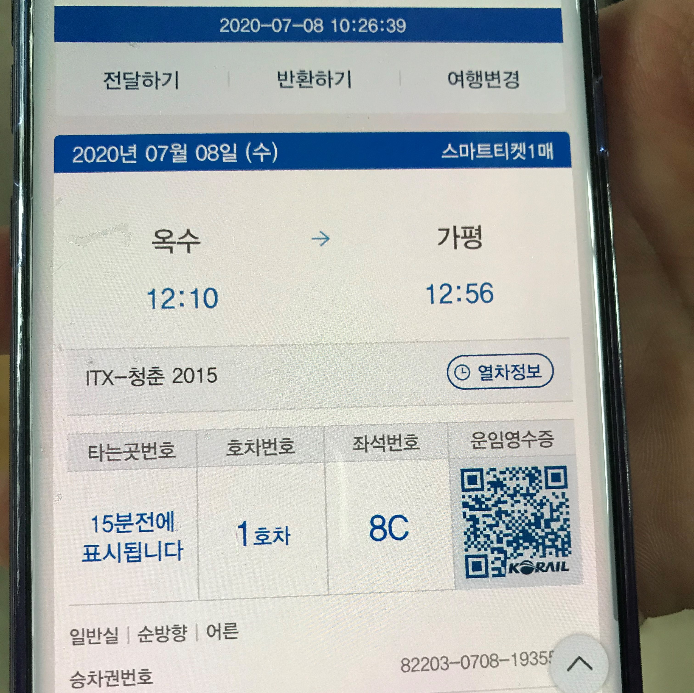
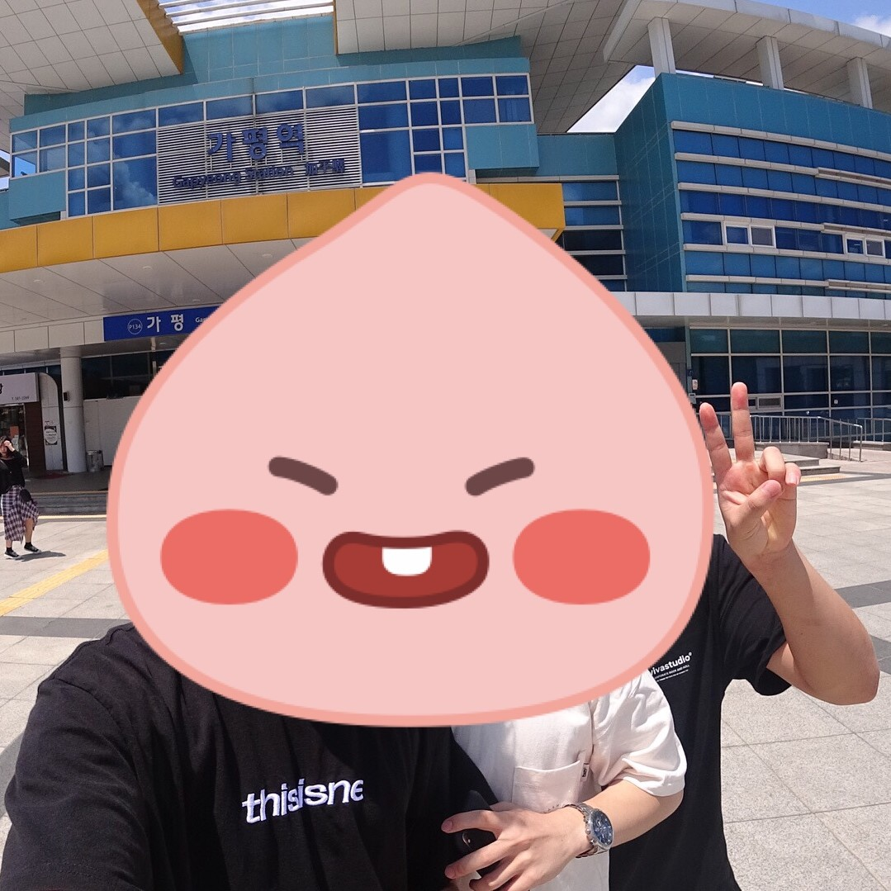
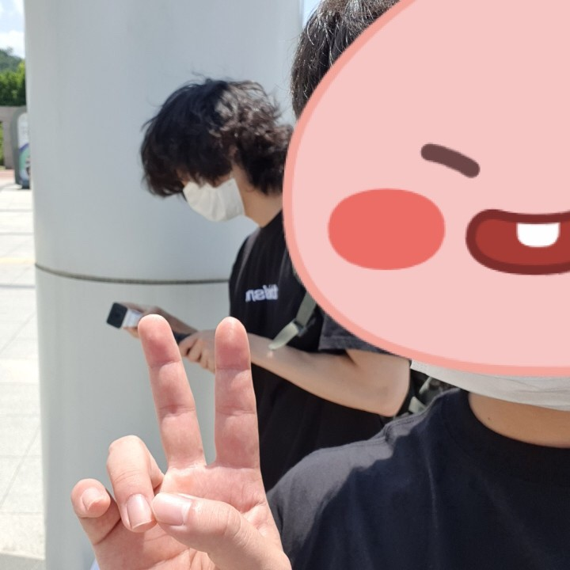

2020년 7월, 고등학교 친구들과 함께 가평 여행을 가게 되었다.
가평 여행을 오게 된 계기는 여행을 가자 가자 하다가 계속 이렇게 말만 하다가는
여행을 못 간다고, 친구가 펜션을 그냥 예약 해버린 것이다.
그래서 이 여행은 여행 오기 3일전에 에 약속을 잡아서 즉흥적으로 오게 된 여행이였다.
이 곳이 우리가 놀았던 계곡 이였다.
친구가 계곡 중에서도 무조건 다이빙 할 수 있고, 깊은 곳을 선택한다고 해서 최종적으로 고른 장소였다.
살면서 이렇게 깊은 계곡을 갔던 것은 처음이였다.
그래서 다이빙도 많이 했었다.
해당 장소는 우리가 2일 동안 생활 했던 [차가원 통나무 펜션] 바로 앞에 있는 계곡이다.
숙소에 도착하니 고양이도 있었다.
여행 기간 동안 새로운 동료(?)였던 녀석이다.
물놀이 할 옷으로 갈아 입고, 점심을 먹었다.
점심은 가볍게 라면을 먹었다.
계곡에서 놀다가, 친구들이랑 찍었던 사진이다.
이제 막 더워지기 시작 되던 때라서,
처음 물에 들어갈 때 추워서 못 들어갔던게 기억난다.
물놀이가 끝나고, 저녁 준비할 때이다.
역시 여행을 오면 고기를 빼 놓을 수 없는것 같다.
충분히 배가 부를만큼 먹었고, 맛 또한 공기 좋은 곳이였는지 더 맛있었다.
마지막은 숙소에 들어와 애들이랑 술 마실 때이다.
코로나 때문에 전역하고 여행을 못가다 처음으로 갔던 여행이였다.
좋은 추억을 만들 수 있었던 뜻 깊은 여행이였다.
가평 여행을 계기로 처음으로 사진말고 영상을 찍어 추억을 남겨봤다.
사진으로 느낄 수 있는 추억 보다 더 생생하게 기억 할 수 있어서 인상 깊었다.
편집 하면서도, '저 때 이런 저런 일 있어서 재밌었는데' 하면서 재밌게 편집했던 것이 기억난다.
주변 사람들에게도 사진도 좋지만, 영상으로도 남기면 더 값진 추억으로 남길 수 있다는 것을 알려주고 싶다.
다음 영상이 직접 촬영하고, 편집하여 만든 영상이다.